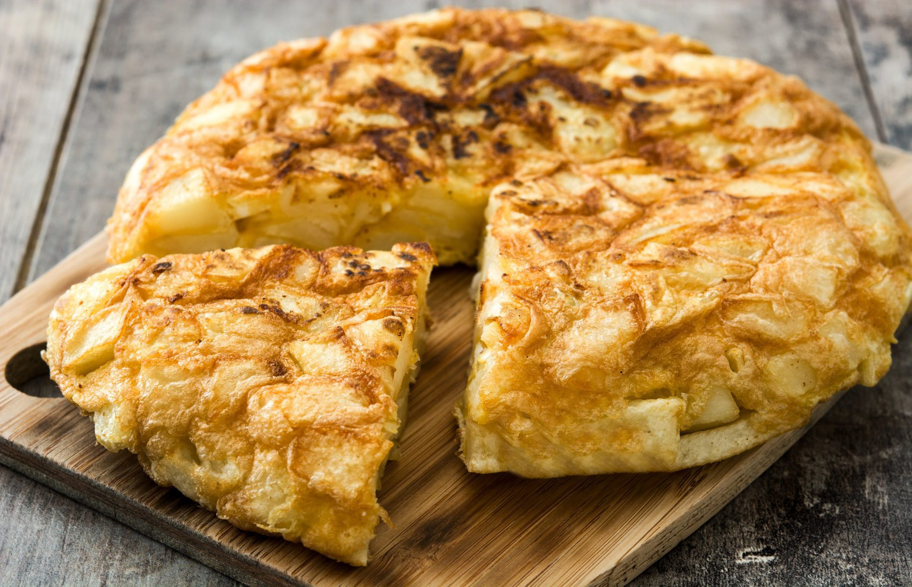

Tortilla de patata
Looking for an authentic Spanish tortilla recipe?
Ingredients (6 servings)
- 2 ½ cups extra virgin olive oil
- 3 medium Yukon Gold Potatoes , (about 2 lbs), peeled and thinly sliced (about ¼ inch thick)
- 6 eggs , beaten
- 2 teaspoons crushed sea salt , divided
Preparation
- Add olive oil to a large skillet over medium heat.
- Add potato and onion; they should be mostly covered with olive oil (add a little more oil if needed). Season with 1 ½ teaspoon sea salt. Cook on medium-high heat, maintaining a gentle boil, for 8-12 minutes, turning occasionally, until potatoes are just fork tender. Don’t overcook.
- Drain potatoes in a colander, reserving oil. Taste and season with more salt, if needed. Allow to cool for a few minutes.
- Meanwhile crack eggs into a bowl and season with about ½ tsp salt. Beat eggs together. Add potato and onion and toss to coat.
- Add a little bit of oil to the bottom of a 10-inch non-stick skillet over high heat. Once hot, pour potato mixture into it and cook on high heat for 1 minute. Reduce heat to medium-low and cook for about 5 minutes.
- Run a rubber spatula along the outer edges of the tortilla to make sure it’s not sticking and to help it form its shape.
- Once it starts to firm up around the edges and in the center (although it will still be a little runny on toplace a large plate (larger than the size of the paover the pan and flip the omelette onto the plate.
- At this point, the cooked side of the tortilla de patatas should be facing up.
- Now gently slide the omelette back into the pan. Aim the back of the omelette to slide into the back of the skillet and use the spatula to help slide the rest of it off the plate and into the pan. Then use the spatula again to press the sides of the omelette in and under, to keep that rounded edge.
- Cook on high heat for 1 minute, and low heat for 2-3 more minutes or until done. It’s done when it feels set in the center and a knife or toothpick inserted into the center comes out clean.
- Flip the finished tortilla de patata back onto a plate, and serve.
Step 1
Step 2
Step 3
Step 4
Step 5
Step 6
Step 7
Step 8
Step 9
Step 10
Step 11